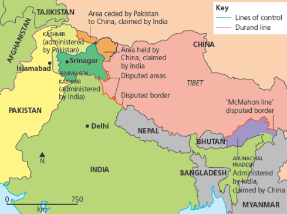
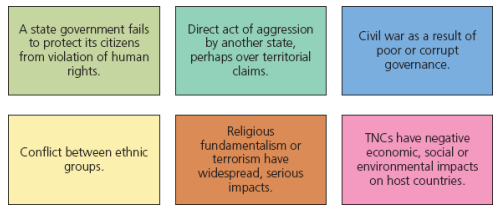

Contested territory, national security and water resources

Kashmir lies in a wider region of disputed borders involving India, Pakistan and China.

Kashmir links territorial dispute, transnational movement, conflict and resource pressure.
| Issue | Why it matters |
|---|---|
| Indus Basin | The Indus is important for irrigation and hydro-electric power in both countries. |
| Indus Waters Treaty 1960 | Mediated by the World Bank, it shared Indus waters and remains in force. |
| Pakistan's concern | Pakistan lies in the lower Indus Basin and argues Indian dams on upper tributaries affect supply. |
| Future pressure | Population growth increases demand while global warming causes Himalayan glaciers to retreat. |
Retreating Himalayan glaciers may reduce long-term water reliability. As India and Pakistan's populations grow, the same contested river system becomes even more valuable for food production, energy and security.